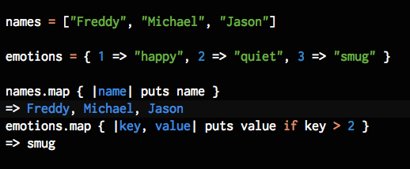
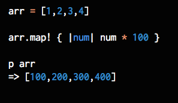

2/27/15
Object Mapping
This is a brief introduction to the #map method. I will attempt to explain a bit about what goes on under #map's hood. So lets dive in with some basic examples:

As you can see the #map method iterates over each index or key/value pair and makes a copy based on the evaluation inside the code block. #map is one of the many useful methods that belong to the Enumerable module. One important note: the #collection method is a synonym for the #map method. The Enumerable module is a group of methods designed for working on collections. Enumerable methods can be called on enumerable classes such as Hash, Array, Set, Range and more. Enumerable methods can also be 'mixed-in' a class but thats another blog for another time.
#map looks and smells like #each so what's the difference?
What's happening? If we look at the different object_id's we'll notice the method is returning a copy of the collection it's sending messages to. #map simply returns the transformed collection.
If we want to #map to permanently modify an array, theres no need to change methods. It's more exclamatory brother can be put to work:
Alright well that's all for now. Send me a message on twitter or contact me here!
References:
http://ruby.bastardsbook.com/chapters/enumerables/
www.slideshare.net/harisamin